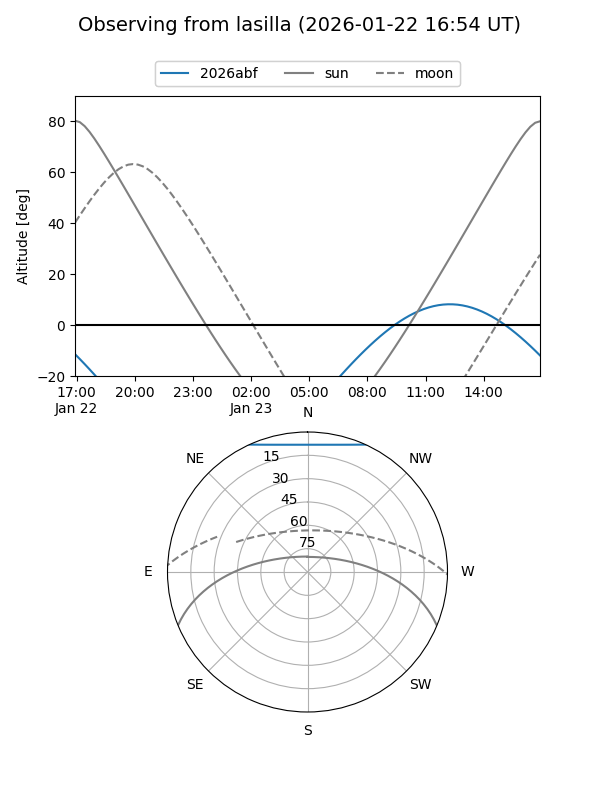
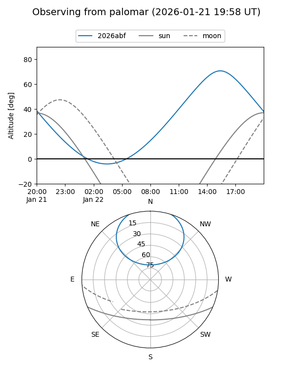
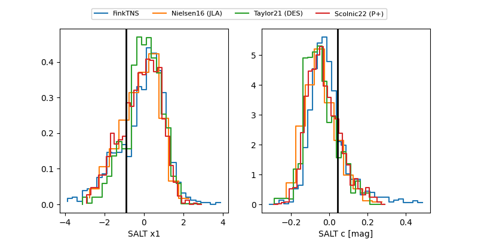

2026abf
Target 2026abf at 2026-01-24 18:01
Aliases and brokers:
FINK: link
Lasair: link
ALeRCE: link
TNS: link
YSE: link
alt names
ZTF26aabdbld (ztf,fink_ztf)
2026abf (tns,yse)
ATLAS26apg (atlas)
Coordinates:
equatorial (ra, dec) = 235.7762,+52.64755
equatorial (HMS+DMS) = 15:43:06.28,+52:38:51.18
galactic (l, b) = (83.6381,+49.28067)
Flags:
Photometry:
last ztfg=19.02, ztfr=19.20
3 ztfg, 4 ztfr detections
Lightcurve

Visibility


Additional plots
